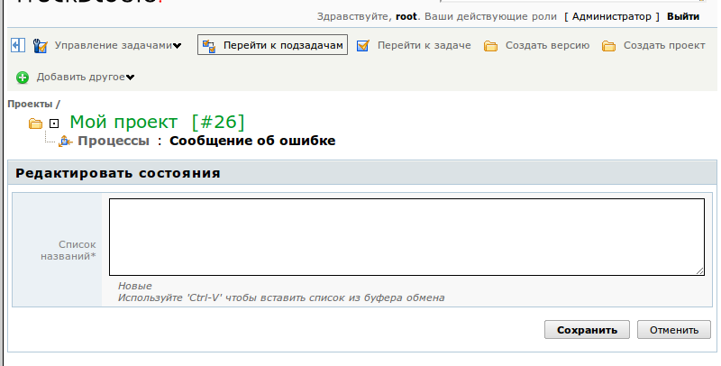
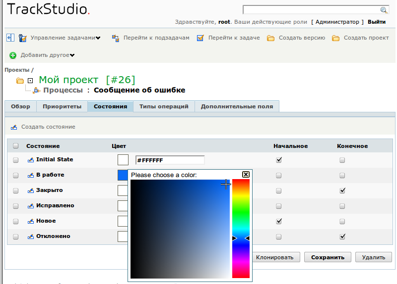
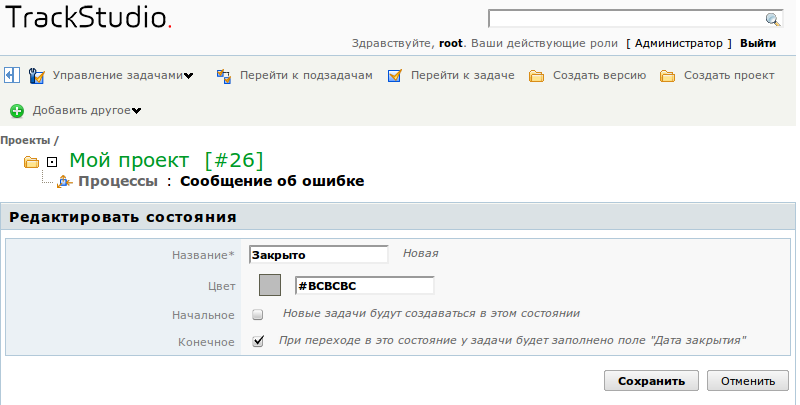
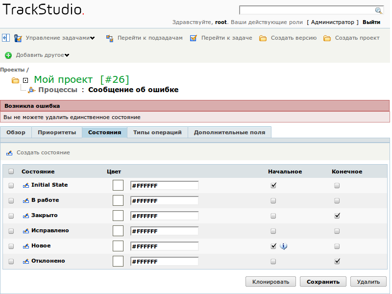

Первое, что вы должны сделать в новом процессе — это настроить набор состояний. Лучше заранее продумать, в каких состояниях может находиться задача с этим процессом.
Для того, чтобы редактировать состояния в процессе, перейдите на страницу этого процесса через меню, а затем — на вкладку "Состояния".
После создания процесса для него автоматически создается состояние Initial State. Переименуйте это состояние и задайте для него цвет. Цвет состояния будет выводиться в виде иконки рядом с названием задачи с этим процессом в списках задач.
Состояния в процессе могут быть начальными, конечными и промежуточными. Они отмечаются иконками:
В одном из начальных состояний — задача будет находиться непосредственно после создания. До четвертой версии в TrackStudio можно было указать лишь одно начальное состояние. Затем, учитывая пожелания пользователей, мы сделали возможность выбора: если для процесса указано несколько начальных состояний, на форме создания задачи будет отображено поле со списком состояний. Это может быть полезно, если у задачи с таким процессом есть предыстория вне системы, или если при поступлении из различных источников она должна проходить разную обработку (можно сделать подтверждение заявки, полученной по электронной почте, например). Таким образом вы можете сделать несколько цепочек обработки задачи.
Для процесса должно быть указано хотя бы одно начальное состояние
Конечных состояний у задачи также может быть несколько, но может не быть ни одного. Конечное состояние задачи отличается тем, что при переходе в него для задачи устанавливается значение поля "Дата закрытия". В остальном же это обычное состояние.
Как задать список состояний
Нажмите на кнопку "Создать состояние" в средней панели. В открывшемся окне введите одно или несколько состояний. При вводе нескольких состояний задавайте их по одному на строку. Затем нажмите кнопку "Сохранить".

Как редактировать список состояний
Вы можете редактировать параметры состояний прямо в списке: менять начальные и конечные состояния, менять их цвет. Для того, чтобы сменить цвет, кликните по квадрату в колонке Цвет и выберите нужный из цветовой палитры, либо задайте код цвета в соответствующем поле.
После внесения всех изменений нажмите кнопку "Сохранить" внизу формы.

Если вы укажете несколько начальных состояний, одно из них будет основным, а остальные — отмечены специальными значками как дополнительные.
Вы также можете клонировать одно или несколько состояний, выбрав их в списке и нажав кнопку "Клонировать" внизу формы. Однако польза от этого мероприятия сомнительна, т.к. вам затем придется редактировать названия этих состояний.
Как редактировать название состояния
Для того, чтобы изменить название состояния, кликните на иконке  в строке состояния. В открывшейся форме введите новое название состояние и, если нужно, измените его параметры.
в строке состояния. В открывшейся форме введите новое название состояние и, если нужно, измените его параметры.

Нажмите кнопку "Сохранить" внизу формы.
Как удалить состояние
Для того, чтобы удалить состояние, отметьте его флажком в списке и нажмите кнопку "Удалить" внизу формы. Если вы пытаетесь удалить основное начальное состояние, то получите сообщение об ошибке:

Для того, чтобы удалить начальное состояние, сначала снимите с него флажок начального состояния, нажмите кнопку "Сохранить" внизу формы и только затем удаляйте.
Разумеется, вы не сможете удалить из процесса состояние, если оно уже используется в существующих задачах. Если вам все же нужно исключить какое-то состояние из процесса — просто удалите операции, которые переводят задачи в это состояние, либо удалите из операций переходы в это состояние.